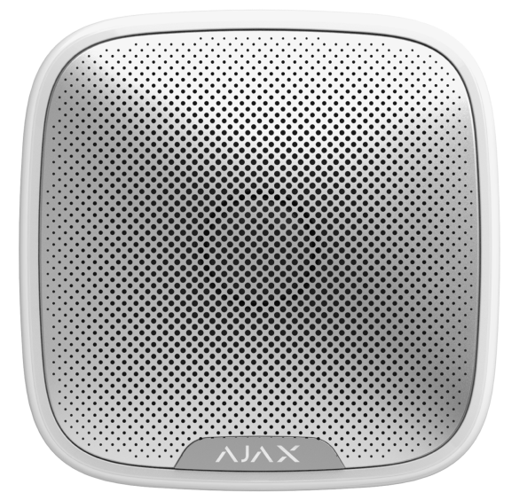
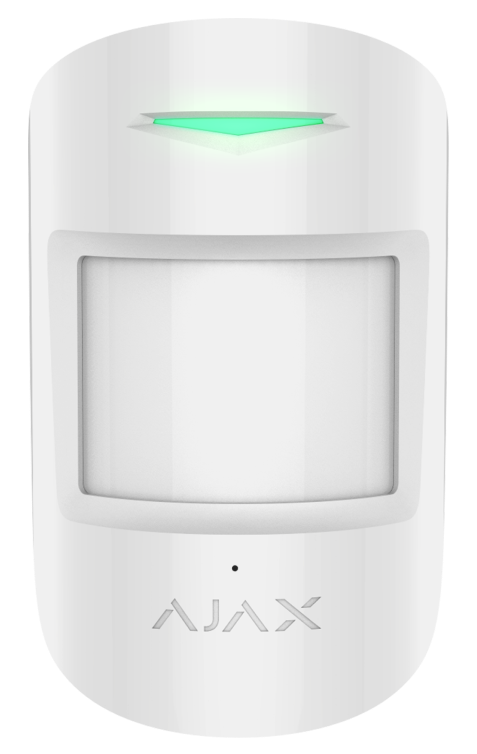
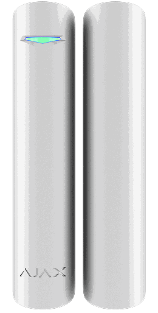

Gamme
Alarme intrusion
Détection d’intrusion, commandes et sirènes Ajax Systems. Baseline pour l’essentiel sans fil ; Superior pour les architectures plus exigeantes.

Complément Baseline
Détecteurs incendie pour le logement.
Fumée, chaleur et monoxyde de carbone dans la même application que l’alarme. Pour un bâtiment, la ligne EN54 est à part.
Residence Line
À ajouter à une alarme Baseline.


Baseline vs Superior
Choisir le bon niveau.
La disponibilité Superior dépend des références et du projet. Orientation lors de l’étude gratuite.
Baseline · 28 références
L’essentiel, sans fil.
Large choix sans fil pour les besoins standards. Déploiement rapide, interface unique, évolutif : idéal pour démarrer et faire grandir votre système.
- Détecteurs de mouvements14 réf.
- Sirènes4 réf.
- Claviers4 réf.
- Boutons & télécommandes3 réf.
Superior · 43 références
Pour les projets exigeants.
Sans fil et/ou filaire, multi-zones, sites sensibles : options avancées selon les références. Sur étude Active Sécurité 974, partenaire agréé Ajax Systems.
- Détecteurs de mouvements16 réf.
- Sirènes9 réf.
- Détecteurs d'ouverture6 réf.
- Claviers6 réf.
Également au catalogue : Residence Line (26).
Baseline
Sélection du catalogue AS974.






Superior
Pour aller plus loin.





Dans cette gamme
Tous les types de produits.
Prêt à sécuriser votre espace ?
Étude et devis gratuits, sans engagement. Intervention chez vous, partout à La Réunion.
Ce que le matériel tient, selon Ajax.
Ajax indique, pour Hub 2, jusqu’à 2 000 m de communication radio avec une centrale ou un prolongateur de portée, en champ libre, et la possibilité de raccorder jusqu’à cinq prolongateurs. La centrale se relie en Ethernet et par deux cartes SIM : si un réseau tombe, elle bascule. La batterie de secours annoncée va jusqu’à 16 heures pour Hub 2 (2G) et jusqu’à 15 heures pour Hub 2 (4G), lorsque l’Ethernet est coupé. Ajax Cloud peut signaler une perte de liaison en 60 secondes. Les échanges sont décrits comme chiffrés : Ajax parle, pour MotionProtect, d’un chiffrement par blocs avec une clé dynamique. La centrale interroge les détecteurs toutes les 12 à 300 secondes, intervalle réglable.
MotionProtect couvre jusqu’à 12 m, avec un angle de 88,5°. Installé à 2,4 m, Ajax indique une immunité aux animaux jusqu’à 20 kg et moins de 50 cm. L’autonomie mise en avant est de 5 ans ; la description technique de la même fiche évoque aussi jusqu’à 7 ans avec une pile CR123A. La portée radio de ce détecteur est indiquée jusqu’à 1 700 m en champ ouvert, pas 2 000 m. Ces chiffres sont ceux du fabricant, en conditions qu’il précise. Les murs, la tôle et l’humidité de La Réunion se vérifient sur place, au test radio.
Sources Ajax : Hub 2 · MotionProtect.
L’étude se fait chez vous, avant le devis.
Active Sécurité 974 commence par une visite sur place, sur toute l’île. Nous regardons chaque accès, chaque volume, les animaux, les ouvrants et la qualité radio réelle. L’analyse porte sur les risques du lieu et sur les accès, pas sur une liste d’appareils à placer partout. Le dimensionnement vient ensuite : combien de détecteurs, quelle centrale, quelles caméras, quels automatismes, et seulement là où ils servent.
Le devis est gratuit et sans engagement. Il décrit le matériel, la pose et le paramétrage. Aucun prix n’est affiché sur ce site, parce que deux maisons voisines ne donnent pas le même chantier. Pour un échange simple, des photos peuvent préparer la visite. Elles ne la remplacent pas quand il faut mesurer la radio ou voir une charpente.
La pose, le réglage, puis nous restons joignables.
L’installation est faite chez vous. Les appareils sans fil se posent sur leur support, les liaisons filaires Fibra ou l’alimentation des caméras suivent le plan de l’étude. Nous testons la radio ou le bus, les zones de détection, les sirènes et les notifications avant de partir. Les utilisateurs, les groupes, les droits et les scénarios sont paramétrés avec vous, pas laissés sur les réglages d’usine.
Vous repartez en sachant armer, désarmer, lire une alerte et reconnaître une panne de pile. Un récapitulatif de ce qui a été posé vous est remis. Ensuite, la maintenance et le dépannage se font selon ce qui est écrit au devis. La télésurveillance peut être étudiée à ce moment-là. Elle n’est pas un service déjà ouvert sur ce site.
Le choix se fait dans le catalogue officiel, pas dans deux coloris imposés.
Cette page couvre 97 références du catalogue AS974 pour cette famille. Sur chaque fiche, le sélecteur de version propose les autres modèles de la même famille, par exemple une autre optique, un autre nombre de gangs, une alimentation différente, ou la déclinaison Jeweller et Fibra quand Ajax les publie toutes les deux. Le sélecteur de coloris n’affiche que les teintes documentées pour cette référence, avec leur visuel officiel quand Ajax le fournit. Ici, cela représente 78 références radio Jeweller et 19 références filaires Fibra. Les coloris rencontrés dans la famille : Blanc, Bleu, Graphite, Jaune, Noir, Rouge, Vert.
Le système peut s’agrandir ensuite : un prolongateur de portée, une caméra, un détecteur incendie de logement ou un automatisme rejoignent la même application. On ne change pas de marque pour ajouter une pièce.
Pourquoi choisir Active Sécurité 974.
Nous sommes partenaire agréé Ajax Systems, et nous n’installons pas un mélange de marques sur le même devis. Alarme, vidéo, incendie de logement et automatismes restent dans une seule application, celle du fabricant. L’étude, la pose et le suivi sont faits par le même interlocuteur, chez vous, de Saint-Denis à Saint-Pierre, du littoral aux Hauts.
Un kit à monter soi-même vous laisse le plan, le test radio et les droits utilisateurs. Cela peut suffire à quelqu’un qui veut bricoler. Ce n’est pas ce que nous vendons : nous venons voir le lieu, nous dimensionnons, nous posons et nous formons. Un installateur qui mélange plusieurs marques peut couvrir plus de catalogues. La contrepartie, chez nous, est l’inverse : un seul écosystème, dont nous répondons après la mise en service.
Certaines offres du marché lient le matériel à un abonnement de télésurveillance, parfois avec une durée d’engagement. Ici, le devis porte d’abord sur le système installé chez vous. Si vous voulez un centre de télésurveillance, nous le regardons à part, pendant l’étude. Nous ne l’affichons pas comme un service déjà souscrit, et nous n’annonçons pas de durée de contrat que nous n’avons pas publiée.
Nous ne publions ni classement, ni nombre de clients, ni avis. La différence à juger est celle du déroulé : visite, analyse, devis détaillé, pose, tests, formation, puis un SAV prévu au devis.
Toutes les références, pour choisir puis demander un devis.
Chaque lien ouvre la fiche, avec le sélecteur de version et de coloris, et le bouton de devis.
- DoorProtect JewellerRéf. DP.Y.J · Noir, Blanc. Détecteur d'ouverture sans fil à relais reed
- DoorProtect Plus JewellerRéf. DP.P.J · Noir, Blanc. Détecteur sans fil d'ouverture, de chocs et d'inclinaison avec relais reed et accéléromètre
- Superior DoorProtect FibraRéf. DP.Y.F · Noir, Blanc. Détecteur d'ouverture filaire avec deux relais reed
- Superior DoorProtect G3 FibraRéf. DP.G3.F · Noir, Blanc. Détecteur d'ouverture avec capteurs de choc, d'inclinaison et de masquage magnétique
- Superior DoorProtect G3 JewellerRéf. DP.G3.J · Noir, Blanc. Détecteur d’ouverture sans fil à relais reed avec capteurs de choc, d'inclinaison et de masquage
- Superior DoorProtect JewellerRéf. DP.S.J · Noir, Blanc. Détecteur d'ouverture sans fil avec deux relais reed
- Superior DoorProtect Plus FibraRéf. DP.P.F · Noir, Blanc. Détecteur filaire d'ouverture, de chocs et d'inclinaison avec deux relais reed et un accéléromètre
- Superior DoorProtect Plus JewellerRéf. DP.SP.J · Noir, Blanc. Détecteur sans fil d'ouverture, de chocs et d'inclinaison avec deux relais reed et un accéléromètre
- GlassProtect JewellerRéf. GP.Y.J · Noir, Blanc. Détecteur sans fil de bris de glace avec microphone
- Superior GlassProtect FibraRéf. GP.Y.F · Noir, Blanc. Détecteur filaire de bris de glace avec microphone
- Superior GlassProtect JewellerRéf. GP.S.J · Noir, Blanc. Détecteur sans fil de bris de glace avec microphone
- CombiProtect JewellerRéf. CP.Y.J · Noir, Blanc. Détecteur IR sans fil de mouvement et de bris de glace avec microphone
- Curtain Outdoor JewellerRéf. CO.Y.J · Blanc. Détecteur de mouvement rideau sans fil à double technologie pour une utilisation à l'extérieur et à l'intérieur
- Curtain Outdoor Mini JewellerRéf. CO.M.J · Blanc. Détecteur de mouvement sans fil de type rideau à double technologie pour une utilisation à l'extérieur et à l'intérieur
- CurtainCam Outdoor HighMount (PhOD) JewellerRéf. CC.OHMP.J · Blanc. Détecteur de mouvement rideau sans fil à double technologie avec fonctions de vérification photo étendues
- DualCurtain Outdoor JewellerRéf. DCO.Y.J · Blanc. Détecteur de mouvement sans fil IR à deux sens de type rideau
- MotionCam (PhOD) JewellerRéf. MC.P.J · Noir, Blanc. Détecteur de mouvement PIR sans fil avec des possibilités de vérification photo étendues
- MotionCam JewellerRéf. MC.Y.J · Noir, Blanc. Détecteur de mouvement IR sans fil avec levée de doute
- MotionCam Outdoor (PhOD) JewellerRéf. MC.OP.J · Blanc. Détecteur de mouvement PIR sans fil avec des possibilités de vérification photo étendues
- MotionCam Outdoor HighMount (PhOD) JewellerRéf. MC.OHMP.J · Blanc. Détecteur de mouvement PIR sans fil avec des possibilités de vérification photo étendues
- MotionCam Outdoor JewellerRéf. MC.O.J · Blanc. Détecteur de mouvement PIR sans fil qui prend des photos par alarme
- MotionProtect Curtain JewellerRéf. MP.C.J · Noir, Blanc. Détecteur de mouvement sans fil IR de type rideau
- MotionProtect JewellerRéf. MP.Y.J · Noir, Blanc. Détecteur de mouvement sans fil IR
- MotionProtect Outdoor JewellerRéf. MP.O.J · Blanc. Détecteur de mouvement IR sans fil pour l'intérieur et l'extérieur
- MotionProtect Plus JewellerRéf. MP.P.J · Noir, Blanc. Détecteur de mouvement sans fil IR avec capteur supplémentaire à micro-ondes en bande K
- Superior CombiProtect FibraRéf. CP.Y.F · Noir, Blanc. Détecteur de mouvement et de bris de glace filaire IR avec microphone
- Superior CombiProtect JewellerRéf. CP.S.J · Noir, Blanc. Détecteur de mouvement IR et détecteur de bris de glace sans fil avec microphone
- Superior MotionCam (PhOD) FibraRéf. MC.P.F · Noir, Blanc. Détecteur de mouvement PIR filaire avec des possibilités de vérification photo étendues
- Superior MotionCam (PhOD) JewellerRéf. MC.SP.J · Noir, Blanc. Détecteur de mouvement PIR sans fil avec des possibilités de vérification photo étendues
- Superior MotionCam AM (PhOD) JewellerRéf. MC.SAMP.J · Blanc. Détecteur de mouvement PIR sans fil avec un système anti-masque et des possibilités de vérification photo étendues
- Superior MotionCam FibraRéf. MC.Y.F · Noir, Blanc. Détecteur de mouvement IR filaire avec levée de doute
- Superior MotionCam G3 (PhOD) JewellerRéf. MC.G3P.J · Noir, Blanc. Détecteur de mouvement PIR sans fil avec des possibilités de vérification photo étendues
- Superior MotionCam HD (PhOD) JewellerRéf. MC.SPHD.J · Noir, Blanc. Détecteur de mouvement PIR sans fil avec des possibilités de vérification photo étendues
- Superior MotionProtect FibraRéf. MP.Y.F · Noir, Blanc. Détecteur de mouvement filaire IR
- Superior MotionProtect G3 FibraRéf. MP.G3.F · Blanc, Noir. Détecteur de mouvement PIR filaire avec système anti-masquage
- Superior MotionProtect G3 JewellerRéf. MP.G3.J · Noir, Blanc. Détecteur de mouvement PIR sans fil avec système anti-masquage
- Superior MotionProtect JewellerRéf. MP.S.J · Noir, Blanc. Détecteur de mouvement IR sans fil
- Superior MotionProtect Plus FibraRéf. MP.P.F · Noir, Blanc. Détecteur de mouvement filaire IR avec capteur supplémentaire à micro-ondes en bande K
- Superior MotionProtect Plus G3 FibraRéf. MPP.G3.F · Noir, Blanc. Détecteur de mouvement IR filaire avec capteur supplémentaire à micro-ondes en bande K et anti-masquage
- Superior MotionProtect Plus G3 JewellerRéf. MPP.G3.J · Noir, Blanc. Détecteur de mouvement PIR sans fil avec capteur supplémentaire à micro-ondes en bande K et système anti-masquage
- Superior MotionProtect Plus JewellerRéf. MP.SP.J · Noir, Blanc. Détecteur de mouvement IR sans fil avec capteur supplémentaire à micro-ondes en bande K
- Superior SeismoProtect G3 FibraRéf. SP.G3.F-000-Y · Noir, Blanc. Détecteur sismique filaire avec capteur de choc supplémentaire
- HomeSiren JewellerRéf. HS.Y.J · Noir, Blanc. Sirène sans fil
- HomeSiren Plus JewellerRéf. HS.P.J · Noir, Blanc. Sirène sans fil avec capacités audio étendues et alertes flexibles
- StreetSiren DoubleDeck JewellerRéf. SS.DD.J · Noir, Blanc. Sirène sans fil avec un support pour un panneau frontal personnalisable
- StreetSiren JewellerRéf. SS.Y.J · Noir, Blanc. Sirène sans fil pour l'intérieur et l'extérieur
- Superior HomeSiren FibraRéf. HS.Y.F · Noir, Blanc. Sirène filaire avec connecteur LED
- Superior HomeSiren G3 JewellerRéf. HS.G3.J · Noir, Blanc. Sirène sans fil avec protection anti-sabotage de pointe et un connecteur LED
- Superior HomeSiren JewellerRéf. HS.S.J · Noir, Blanc. Sirène sans fil
- Superior StreetSiren DoubleDeck FibraRéf. SS.DD.F · Noir, Blanc. Sirène filaire avec un support pour un panneau frontal personnalisable
- Superior StreetSiren DoubleDeck JewellerRéf. SS.SDD.J · Noir, Blanc. Sirène sans fil avec un support pour un panneau frontal personnalisable
- Superior StreetSiren FibraRéf. SS.Y.F · Noir, Blanc. Sirène filaire pour l'intérieur et l'extérieur
- Superior StreetSiren Plus FibraRéf. SS.P.F · Noir, Blanc. Sirène filaire avec protection anti-sabotage de pointe et de nombreuses certifications de conformité
- Superior StreetSiren Plus G3 JewellerRéf. SSP.G3.J · Noir, Blanc. Sirène sans fil avec protection anti-sabotage de pointe et de nombreuses certifications de conformité
- Superior StreetSiren Plus JewellerRéf. SS.S.J · Noir, Blanc. Sirène sans fil avec protection anti-sabotage de pointe et de nombreuses certifications de conformité
- Ajax SpaceControl JewellerRéf. SC.Y.J · Noir, Blanc. Télécommande avec bouton de panique et gestion des modes de sécurité
- Ajax Superior SpaceControl JewellerRéf. SC.S.J · Noir, Blanc. Télécommande sans fil avec bouton de panique et gestion des modes de sécurité
- Button JewellerRéf. BT.Y.J · Noir, Blanc. Bouton de panique / bouton intelligent sans fil
- DoubleButton JewellerRéf. DB.Y.J · Noir, Blanc. Bouton d'urgence sans fil
- Superior Button JewellerRéf. BT.S.J · Noir, Blanc. Bouton de panique / bouton intelligent sans fil
- Superior DoubleButton G3 JewellerRéf. DB.G3.J · Noir, Blanc. Bouton d'urgence sans fil pour sites à haut risque
- KeyPad JewellerRéf. KP.Y.J · Noir, Blanc. Clavier tactile sans fil
- KeyPad Outdoor JewellerRéf. KP.O.J · Noir, Blanc, Graphite. Clavier sans fil avec authentification par Pass, Tag, smartphones et codes
- KeyPad Plus JewellerRéf. KP.P.J · Noir, Blanc. Clavier tactile sans fil compatible avec les cartes et les porteclés chiffrés sans contact
- KeyPad TouchScreen JewellerRéf. KP.TS.J · Noir, Blanc. Clavier sans fil avec un écran tactile qui prend en charge l'authentification par smartphones, Pass, Tag, et codes
- Superior KeyPad FibraRéf. KP.Y.F · Noir, Blanc. Clavier tactile filaire
- Superior KeyPad Outdoor FibraRéf. KP.G3O.F · Noir, Blanc, Graphite. Clavier filaire intérieur et extérieur avec authentification par Pass, Tag, smartphones et codes
- Superior KeyPad Plus G3 JewellerRéf. KPP.G3.J · Noir, Blanc. Clavier sans fil avec touches tactiles permettant l'authentification par Pass, Tag et codes
- Superior KeyPad Plus JewellerRéf. KP.SP.J · Noir, Blanc. Clavier tactile sans fil compatible avec les cartes et les porteclés chiffrés sans contact
- Superior KeyPad TouchScreen FibraRéf. KP.TS.F · Noir, Blanc. Clavier filaire avec écran tactile et autorisation sans contact
- Superior KeyPad TouchScreen G3 JewellerRéf. KPT.G3.J · Noir, Blanc. Clavier sans fil avec écran tactile permettant l'authentification par Pass, Tag, smartphones et codes
- FireProtect 2 AC (CO) JewellerRéf. FP2.ACC.J · Noir, Blanc. Détecteur d'incendie sans fil de monoxyde de carbone alimenté par le secteur
- FireProtect 2 AC (Heat) JewellerRéf. FP2.ACH.J · Noir, Blanc. Détecteur d'incendie sans fil de chaleur alimenté par le secteur
- FireProtect 2 AC (Heat/CO) JewellerRéf. FP2.ACHC.J · Noir, Blanc. Détecteur d'incendie sans fil de chaleur et de monoxyde de carbone alimenté par le secteur
- FireProtect 2 AC (Heat/Smoke) JewellerRéf. FP2.ACHS.J · Noir, Blanc. Détecteur d'incendie sans fil de fumée et de chaleur alimenté par le secteur
- FireProtect 2 AC (Heat/Smoke/CO) JewellerRéf. FP2.ACHSC.J · Noir, Blanc. Détecteur d'incendie sans fil de fumée, de chaleur et de monoxyde de carbone alimenté par le secteur
- FireProtect 2 RB (CO) JewellerRéf. FP2.RBC.J · Noir, Blanc. Détecteur sans fil de CO avec batteries remplaçables
- FireProtect 2 RB (CO) UL JewellerRéf. FP2.RBC.J-000-NA.UL · Noir, Blanc. Détecteur d'incendie sans fil avec capteur de CO
- FireProtect 2 RB (Heat) JewellerRéf. FP2.RBH.J · Noir, Blanc. Détecteur sans fil de chaleur avec batteries remplaçables
- FireProtect 2 RB (Heat) UL JewellerRéf. FP2.RBH.J-000-NA.UL · Noir, Blanc. Détecteur d'incendie sans fil avec capteur de chaleur
- FireProtect 2 RB (Heat/CO) JewellerRéf. FP2.RBHC.J · Noir, Blanc. Détecteur sans fil de chaleur et de CO avec batteries remplaçables
- FireProtect 2 RB (Heat/Smoke) JewellerRéf. FP2.RBHS.J · Noir, Blanc. Détecteur sans fil de chaleur et de fumée avec batteries remplaçables
- FireProtect 2 RB (Heat/Smoke) UL JewellerRéf. FP2.RBHS.J-000-NA.UL · Noir, Blanc. Détecteur sans fil de chaleur et de fumée avec batteries remplaçables
- FireProtect 2 RB (Heat/Smoke/CO) JewellerRéf. FP2.RBHSC.J · Noir, Blanc. Détecteur sans fil de chaleur, de fumée et de CO avec batteries remplaçables
- FireProtect 2 RB (Heat/Smoke/CO) UL JewellerRéf. FP2.RBHSC.J-000-NA.UL · Noir, Blanc. Détecteur sans fil de chaleur, de fumée et de CO avec batteries remplaçables
- FireProtect 2 SB (CO) JewellerRéf. FP2.SBC.J · Noir, Blanc. Détecteur sans fil de CO avec batteries scellées
- FireProtect 2 SB (Heat) JewellerRéf. FP2.SBH.J · Noir, Blanc. Détecteur sans fil de chaleur avec batteries scellées
- FireProtect 2 SB (Heat/CO) JewellerRéf. FP2.SBHC.J · Noir, Blanc. Détecteur sans fil de chaleur et de CO avec batteries scellées
- FireProtect 2 SB (Heat/Smoke) JewellerRéf. FP2.SBHS.J · Noir, Blanc. Détecteur sans fil de chaleur et de fumée avec batteries scellées
- FireProtect 2 SB (Heat/Smoke/CO) JewellerRéf. FP2.SBHSC.J · Noir, Blanc. Détecteur sans fil de chaleur, de fumée et de CO avec batteries scellées
- FireProtect JewellerRéf. FP.Y.J · Noir, Blanc. Détecteur d'incendie sans fil avec capteur de chaleur et de fumée
- FireProtect Plus JewellerRéf. FPP.Y.J · Noir, Blanc. Détecteur sans fil de chaleur, de fumée et de CO avec batteries remplaçables
- ManualCallPoint (Blue) JewellerRéf. MCP.B.J · Bleu. Bouton sans fil, programmable et réinitialisable de couleur bleue
- ManualCallPoint (Green) JewellerRéf. MCP.G.J · Vert. Déclencheur manuel réinitialisable sans fil avec scénarios programmables
- ManualCallPoint (Red) JewellerRéf. MCP.R.J · Rouge. Déclencheur manuel d'alarme incendie, sans fil, avec scénarios programmables
- ManualCallPoint (White) JewellerRéf. MCP.W.J · Blanc. Déclencheur manuel réinitialisable sans fil avec scénarios programmables
- ManualCallPoint (Yellow) JewellerRéf. MCP.Y.J · Jaune. Déclencheur manuel réinitialisable sans fil avec scénarios programmables
Aucune référence ne convient telle quelle : décrire mon besoin